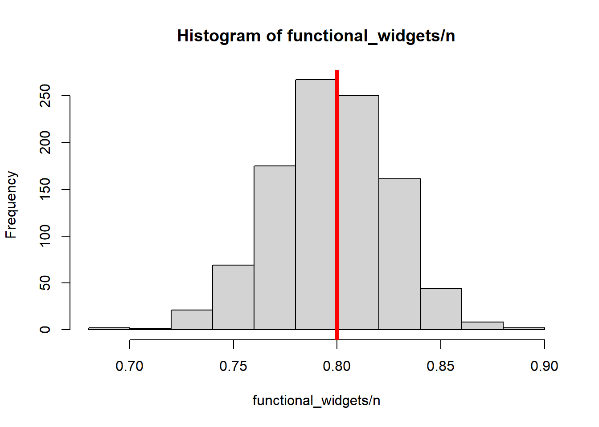
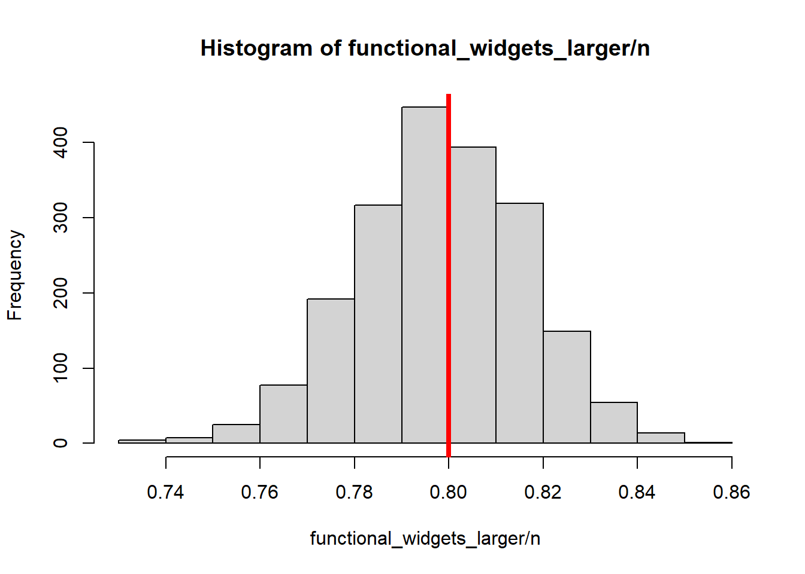
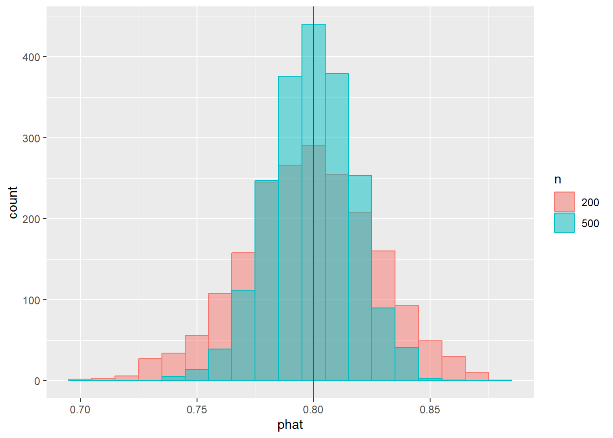
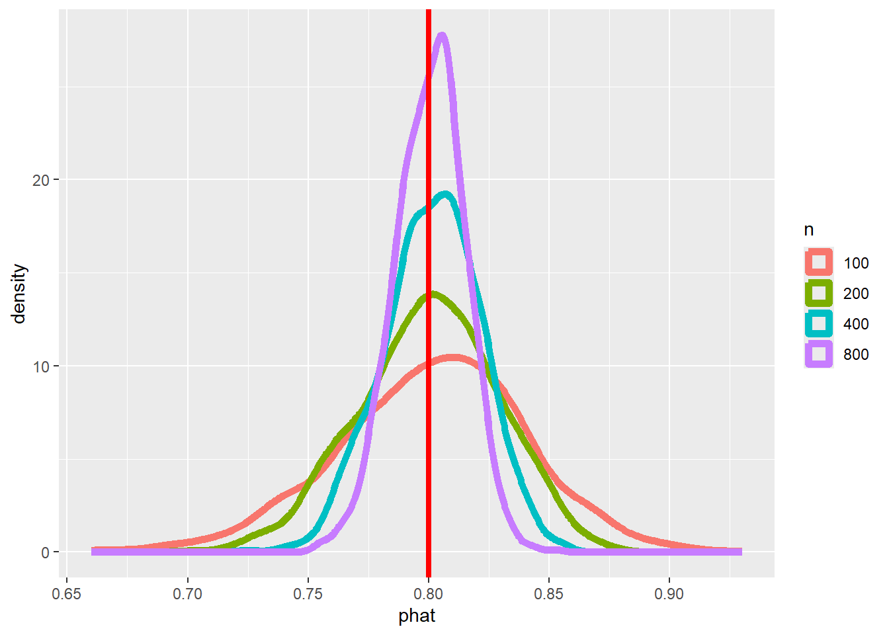
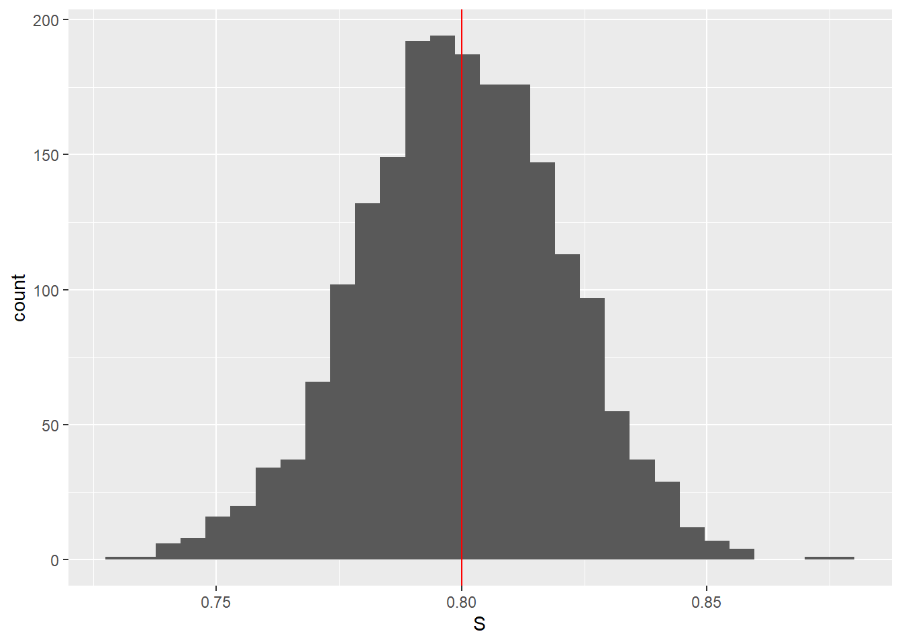
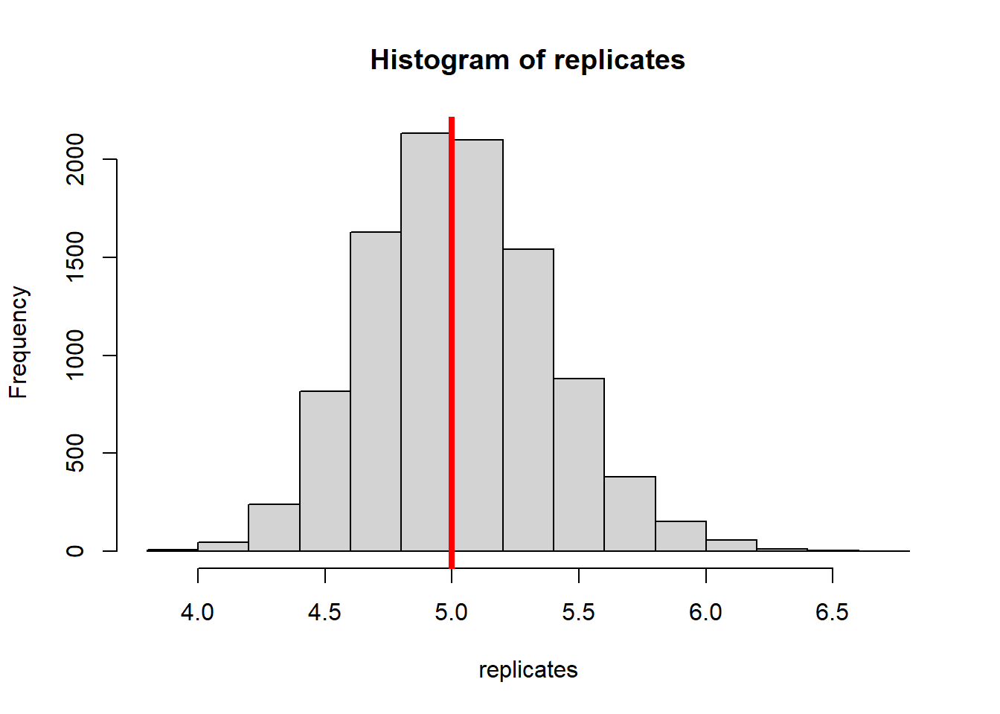

n <- 200; # We will examine n=200 widgets
p <- 0.8; # Suppose that 80% of widgets are functional
functional_widgets <- rbinom(1, size=n, p); # Draw one sample of widgets.
functional_widgets; # How many of the n widgets are functional?[1] 166These notes will discuss the problem of estimation. They are based in part on notes by Karl Rohe.
Estimation refers to the task of giving a value or range of values that are a “good guess” about some quantity out there in the world. Often this quantity is the parameter of a model, such as the mean of a distribution, but other times it is a number or quantity out there in the world. We’ve already seen an example of estimation problems this semester: we’ve used Monte Carlo methods many times so far to estimate the probability of an event. We’ve also discussed the problem of estimating numbers like the average human height. We’ll delve more into these and related problems this week and next.
After this lesson, you will be able to
The goal of estimation is to (approximately) determine the value of a quantity out there in the world. Often, we identify this quantity with a parameter in a model, such as the mean of a normal.
Example: Human heights
Let’s think back to our human height example from our first lecture. Recall that our goal was to determine the average human height, \(\mu\).
We said that it was infeasible to measure the height of every human, but we could measure the heights \(X_1,X_2,\dots,X_n\) of a few thousand humans and report the mean of that sample (the “sample mean”), \[ \hat{\mu} = \bar{X} = \frac{1}{n} \sum_{i=1}^n X_i, \] where \(n\) is the number of humans in our sample.
Thus, we might report the value of \(\hat{\mu}\) (say, 172.1 cm) and state that “We estimate the average human height to be \(172.1\) cm.”
This value \(\hat{\mu}\) is called a point estimate. We make our “best guess” as to the true value of \(\mu\).
Aside: in case you haven’t seen it before, this “hat” notation, where we write \(\hat{\mu}\) for our estimate is common in statistics. If we are trying to esitmate a parameter, say, \(\mu\), then we will often write our estimate of that parameter as the same symbol with a hat (technically a circumflex) on it, like \(\hat{mu}\).
Facts from probability theory (specifically, the law of large numbers, which we’ll talk about soon) state that this sample mean \(\hat{\mu}\) is close to the true population mean \(\mu\).
But how close is close?
In addition to our estimate \(\hat{\mu}\), we would like to have some kind of notion of how certain we are in our estimate.
Said another way, if we say that “we estimate the average human height to be 172.1 cm”, we might also be willing to say that \(172.3\) cm or \(171.8\) cm are also reasonable estimates.
If you have seen confidence intervals (CIs) before, both of these ideas should sound somewhat familiar. If you haven’t seen CIs before, not to worry– we’ll discuss them in great detail next week. This week, we’ll talk primarily about point estimates, but we’re also building the groundwork needed to talk about confidence intervals next week.
The Universal Widgets of Madison (UW-Madison) company manufactures widgets Their widget machine produces widgets all day.
Unfortunately, making widgets is hard, and not all widgets produced by the machine are functional. Due to randomness in the manufacturing process, a widget is functional with probability \(p\), and dysfunctional with probability \(1-p\). The engineers on the UW-Madison production line are quite confident that widgets are independent of one another– that is, whether or not one widget is dysfunctional has no bearing on whether or not any other widgets coming off the production line are dysfunctional.
UW ships widgets in batches, and they want to ensure that every batch ships with at least 5 functional widgets in it.
Thus, we have two (related) questions to answer:
We will focus on the first of these two questions, since if we have a good estimate for \(p\), we can get a decent answer to question (2) using Monte Carlo methods. Still, in the course of these lectures, you will see how to address the second question quite easily.
Step 1: Specify a model
All of statistics starts with choosing a model for the world, so let’s start there.
What would be a good model for this setting?
Since the outcome of interest here is binary (i.e., it is a yes/no or success/failure outcome), it is natural to model whether a widget is functional or dysfunctional as a Bernoulli random variable with success probability \(p\).
That is, we model each widget as being functional with probability \(p\) and dysfunctional with probability \(1-p\).
The production engineers are condfident that we are safe assuming that widget are independent. Of course, in the real world, the independence assumption is probably unrealistic, but we’ll let this slide becuase if we tried to account for dependency we would have a rough time creating a model.
So, we will make the following assumption: widgets are functional independently with probability \(p\).
We’ll imagine that we take a sample of widgets from the production line at UW-Madison, and use that sample to try and estimate \(p\).
Having chosen a model for our data, the first thing we need to do is implement it in R. For now, we’ll make arbitrary choices for the number of widgets n and the probability p of a widget being functional.
n <- 200; # We will examine n=200 widgets
p <- 0.8; # Suppose that 80% of widgets are functional
functional_widgets <- rbinom(1, size=n, p); # Draw one sample of widgets.
functional_widgets; # How many of the n widgets are functional?[1] 166Question: why is the binomial distribution the right thing to use, here?
# Let's wrap that up in a function for use later.
generate_widgets <- function(n,p) {
return( rbinom(1, size=n, p) );
}Step 2: Estimating \(p\)
Suppose that we can collect data by observing widgets \(1,2,\dots,n\).
Let’s denote our data by \(X_1,X_2,\dots,X_n\), where \(X_i=1\) if the \(i\)-th widget is functional and \(X_i=0\) if it is dysfunctional. That is, recalling our indicator function notation, \[ X_i = 1_{\large \text{ widget } i \text{ is functional } } \]
If we examine enough widgets, we know that we can estimate \(p\) very well using the sample mean
\[\overline{X} = \frac{1}{n} \sum_{i=1}^n X_i = \frac{ \text{# of functional widgets} }{ n }.\]
Again, the law of large numbers (which we’ll discuss more formally soon), says that once \(n\) is big, this estimate will be really close to \(\mathbb{E} \bar{X} = p\). More specifically, the more widgets we examine, the more accurate our estimate will be (on average).
Unfortunately, widgets aren’t free. So, here are two questions:
Question 1 is a question about experiment design. Specifically, it is a question about sample size. How many observations (i.e., how much data) do we need to collect in order to get a certain level of estimation accuracy?
Question 2 is a question about the accuracy of a specific estimate, namely the sample mean. We will see below that these two questions are, in a certain sense, two sides of the same coin.
So, to start, what do we mean when we say that our estimate will be close to \(p\)?
Let’s see this in action with a simulation.
# Still n=200 widgets, 80% of which are functional.
n <- 200; p <- 0.8;
# This time, we'll generate lots of iterations
# of our experiment, and we'll make a histogram of our
# estimates of p.
# This is going to look a lot like Monte Carlo!
NMC <- 1000;
functional_widgets <- rep(NA, NMC);
for(i in 1:NMC) {
functional_widgets[i] <- generate_widgets(n,p)
}
# Plot estimates of p, #functional/#observations
hist( functional_widgets/n );
# Draw a vertical line at the true value of p
abline( v=p, col='red', lwd=4 );
Let’s pause and make sure we understand the experiment we just ran.
Each data point in the above histogram corresponds to a single instance of our experiment, in which we observe \(n=200\) widgets, each of which is functional independently with probability \(p=0.8\) (indicated in red in the plot).
To estimate \(p\), we count up what fraction of the \(200\) widgets in our sample are functional.
Since the data are random, our estimate of \(p\) is also random. The histogram above illustrates that randomness.
Sometimes our estimate is a bit higher than the true value of \(p\), sometimes it is lower. But as we can see, most of the time our estimate is close to \(p\), within about \(0.06\).
Before continuing our investigation of widgets, let’s take a moment to discuss things in more generality and establish some vocabulary.
Suppose we have our data \(X_1,X_2,\dots,X_n\). If we performed another experiment, we would presumably see a different set of values for our data. That is reflected in the fact that we model the observations \(X_1,X_2,\dots,X_n\) as being random variables.
So, in our example above, \(X_i\) is a Bernoulli random variable representing whether or not widget \(i\) is functional.
We might observe that six our of ten widgets are functional, but that could be entirely due to chance– on another day we might observe that seven out of ten are functional, or four out of ten or… etc.
We typically summarize our data with a statistic, say \(S(X_1,X_2,\dots,X_n)\). This should remind you of our test statistics from hypothesis testing. Remember, a statistic is just a function of our data– it takes our data as input and spits out a number (or collection of numbers) summarizing our data.
In our example above, we summarized the data with the sample mean \(S(X_1,X_2,\dots,X_n) = n^{-1} \sum_{i=1}^n X_i\), but this statistic \(S\) can be any function of your data. We usually choose the function \(S\) to be so that \(S(X_1,X_2,\dots,X_n)\) will tend to be close to our quantity of interest (e.g., the mean \(\mu\) in our human heights example, or our probability \(p\) in our widgets example).
We call this function \(S\) an estimator for that quantity of interest.
In our widgets example, we are estimating the probability \(p\), and we chose our statistic to be the sample mean of the data (i.e., the fraction of widgets that were functional). That is, we used the sample mean as our estimator for \(p\).
We call a particular value of this estimator (i.e., \(S\) applied to a particular choice of data) an estimate of our quantity. So, if we observe 162 functional widgets in our sample of \(n=200\) widgets, our estimate of \(p\) is \(162/200 = 0.81\).
Now, since the data \(X_1,X_2,\dots,X_n\) are random, and \(S = S(X_1,X_2,\dots,X_n)\) is a function of the data, that means that our statistic \(S\) is also random. So, in just the same way that \(X_i\) has a distribution (e.g., \(X_i \sim \operatorname{Bernoulli}(p)\) above), \(S\) also has a distribution.
We usually call this distribution the sampling distribution, because it describes the behavior of our statistic, which is a function of the sample.
So, let’s turn back to the first of our two questions: If we are willing to tolerate an error of, say, 2%, how many widgets do we need to examine?
Well, let’s start by looking at the histogram of estimates from \(2000\) different runs with \(n=200\) and \(p=0.8\).
n <- 200; p <- 0.8; # Still n=200 widgets, 80% of which are functional.
# We'll generate lots of iterations
NMC <- 2000;
functional_widgets <- rep(NA, NMC);
for(i in 1:NMC) {
functional_widgets[i] <- generate_widgets(n,p)
}
# Plot estimates of p, #functional/#observations
hist( functional_widgets/n );
# Draw a vertical line at the true value of p
abline( v=p, col='red', lwd=4 );
Most of the estimates are between \(0.72\) and \(0.88\).
Let’s try increasing \(n\) from \(n=200\) to \(n=500\). That is, let’s try gathering more data, in the form of more widgets.
# n=500 widgets instead of 200, but still 80% are functional.
n <- 500; p <- 0.8;
# We'll generate lots of iterations
NMC <- 2000;
functional_widgets_larger <- rep(NA, NMC);
for(i in 1:NMC) {
functional_widgets_larger[i] <- generate_widgets(n,p)
}
# Plot estimates of p, #functional/#observations
hist( functional_widgets_larger/n );
# Draw a vertical line at the true value of p
abline( v=p, col='red', lwd=4 );
If you compare this plot to the one above, you’ll see that the values are more tightly concentrated about \(p=0.8\). In fact, let’s just display them both in one plot.
p <- 0.8; # Still n=200 widgets, 80% of which are functional.
# Put the data into a data frame to pass to ggplot2.
phat <- c(functional_widgets/200, functional_widgets_larger/500 ); # "p hat", i.e., estimate of p.
n <- c( rep(200, 2000), rep(500, 2000) );
df <- data.frame( 'n'=as.factor(n), 'phat'=phat);
library(ggplot2)
pp <- ggplot( df, aes(x=phat, color=n, fill=n));
pp <- pp + geom_histogram( aes(), position='identity', alpha=0.5, binwidth=0.01);
pp <- pp + geom_vline( xintercept=p, color='red');
pp
Looking at the plot, we see that the \(n=500\) estimates (blue) tend to cluster more tightly around the true value of \(p\) (\(p=0.8\), indicated by the vertical red line), when compared with the \(n=200\) estimates (orange).
Gathering more data (i.e., observing more widgets) gives us a more accurate (on average!) estimate of \(p\).
Just to drive this home, let’s increase \(n\) even more.
p <- 0.8; # Still using 80% functional rate.
# Note: there are "cleaner" ways to build this data frame,
# but those ways are harder to understand on a first glance.
# At this stage of your career, "clumsy but easy to read"
# is better than "short but cryptic"
widgets_100 <- rbinom(1000, size=100, p);
widgets_200 <- rbinom(1000, size=200, p);
widgets_400 <- rbinom(1000, size=400, p);
widgets_800 <- rbinom(1000, size=800, p);
# Compute "p hat", i.e., estimate of p
phat <- c(widgets_100/100, widgets_200/200,
widgets_400/400, widgets_800/800 );
n <- c( rep(100, 1000), rep(200, 1000), rep(400, 1000), rep(800, 1000) );
# Put the data into a data frame to pass to ggplot2.
df <- data.frame( 'n'=as.factor(n), 'phat'=phat);
pp <- ggplot( df, aes(x=phat, color=n ));
# Using a smoothed density instead of histogram for easy comparison
pp <- pp + geom_density( size=2 );Warning: Using `size` aesthetic for lines was deprecated in ggplot2 3.4.0.
ℹ Please use `linewidth` instead.pp <- pp + geom_vline( xintercept=p, color='red', size=1.5);
pp
The plot above certainly seems to indicate that as we increase the number of samples (i.e., the number of widgets \(n\)), our estimate becomes more accurate, in the sense that it is closer to the true value of \(p\) (on average, anyway).
But when we increase our sample from, say \(n=100\) to \(n=800\), like in the experiment above, just how much better does our estimate become?
As a reminder, we are denoting our data by \(X_1,X_2,\dots,X_n\), where \(X_i=1\) if the \(i\)-th widget is functional and \(X_i=0\) if it is dysfunctional. That is, recalling our indicator function notation yet again, \[ X_i = 1_{\large \text{ widget } i \text{ is functional } }. \]
We are using the sample mean as our estimator, \[ \hat{p} = \hat{p}(X_1,X_2,\dots,X_n) = \frac{1}{n} \sum_{i=1}^n X_i. \]
Let’s consider the variance of this estimator.
Why the variance? Well, remember that for a random variable \(Z\), \[ \operatorname{Var} Z = \mathbb{E}( Z - \mathbb{E}Z)^2. \] That is, the variance describes how close a variable is on average to its expectation.
Now, the expectation of our estimator is \[ \mathbb{E} \hat{p} = \mathbb{E} \frac{1}{n} \sum_{i=1}^n X_i = \frac{1}{n} \sum_{i=1}^n \mathbb{E} X_i = \frac{1}{n} \sum_{i=1}^n p = p, \]
where we used
So on average, our estimator \(\hat{p}\) is equal to the thing we are trying to estimate. That’s good! In fact, it’s so good that statisticians have a special name for this property: we say that \(\hat{p}\) is an unbiased estimator of \(p\).
But the fact that our estimator is on average equal to \(p\) doesn’t tell us about how close it is to \(p\). For example, suppose that we have an estimator that is equal to \(p+100\) half the time and \(p-100\) the other half of the time. On average, our estimate is equal to \(p\): \[ \frac{1}{2}(p+100) + \frac{1}{2}(p-100) = \frac{p}{2} + 50 + \frac{p}{2} - 50 = p, \] but our estimate is never particularly close to \(p\)…
So how close is our sample mean \[ \hat{p} = \frac{1}{n} \sum_{i=1}^n X_i \]
to \(p\), on average (as measured by the average squared distance)?
Let’s try to compute it:
\[ \operatorname{Var} \hat{p} = \operatorname{Var} \sum_{i=1}^n \frac{ X_i }{n}. \]
Now, our widget indicators \(X_1,X_2,\dots,X_n\) are independent, so we can use the fact that the variance of a sum of independent random variables is just the sum of their variances: \[ \operatorname{Var} \hat{p} = \sum_{i=1}^n \operatorname{Var} \frac{ X_i }{n}. \]
Now, since all of the \(X_i\) have the same distribution, we just have to compute \[ \sigma^2_n = \operatorname{Var} \frac{ X_1 }{n}, \]
and we’ll be done, since \(\operatorname{Var} \hat{p} = n \sigma^2_n\).
So what is \(\sigma^2_n\)?
\[ \operatorname{Var} \frac{ X_1 }{n} = \mathbb{E} \left( \frac{X_1 - \mathbb{E} X_1}{n} \right)^2 = \mathbb{E} \left( \frac{X_1 - p}{n} \right)^2. \]
Now, \(X_1\) has a discrete distribution: \(X_1 = 1\) with probability \(p\) and \(X_1=0\) with probability \(1-p\). So, \[ \begin{aligned} \operatorname{Var} \frac{ X_1 }{n} &= \mathbb{E} \left(\frac{X_1 - p}{n} \right)^2 \\ &= \frac{ (1-p)^2 }{n^2} \Pr[ X_1 = 1] + \frac{ (-p)^2 }{ n^2 } \Pr[ X_1 = 0 ] \\ &= \frac{ (1-p)^2 p + p^2(1-p) }{ n } \\ &= \frac{ p(1-p)[ (1-p) + p ] }{ n^2 } \\ &= \frac{ p(1-p) }{ n^2 }. \end{aligned} \] If you’ve played around with Bernoulli random variables before, that numerator should look familiar– that’s the variance of a Bernoulli with success parameter \(p\). The \(n^2\) in the denominator is indicative of a basic fact about variance that you may have seen before, depending on your background: \(\operatorname{Var} aX = a^2 \operatorname{Var} X\).
Okay, so we have found that \[ \sigma^2_n = \operatorname{Var} \frac{ X_1 }{n} = \frac{ p(1-p) }{ n^2 }, \]
and we said that \(\operatorname{Var} \hat{p} = n \sigma^2_n\), so we have found the variance of our estimator: \[ \operatorname{Var} \hat{p} = n \frac{ p(1-p) }{ n^2 } = \frac{ p(1-p) }{ n}. \]
Dang, that was a lot of math. What did we learn as a result of it?
Well, the variance of our estimator \(\hat{p}\), based on a sample of size \(n\), is \[ \operatorname{Var} \hat{p} = \frac{ p(1-p) }{ n}. \]
\(p\) doesn’t depend on \(n\)m so as the sample size \(n\) increases, the variance decreases like \(1/n\). That is, if we want to decrease the variance of our estimate by 1/2, we need to double our sample size.
There’s one small flaw here. The variance isn’t quite the right measure of “how close” our estimate is to our target \(p\). The more appropriate choice is the standard deviation.
In later courses you’ll see in detail why this is really the right quantity to care about here, but for now, think of it this way:
Kind of like a physics problem, the “units” of variance is “squared stuff”, where “stuff” is the unit that your variable is measured in.
But the “right” way to measure how close we are to something isn’t in squared units– that’s like an area, not a distance. So we have to take the square root of the variance to get a sensible answer.
So, \[ \operatorname{sd} \hat{p} = \sqrt{ \operatorname{Var} \hat{p} } = \frac{ \sqrt{ p(1-p) } }{ \sqrt{n} }. \]
Now, suppose that we have a sample of size \(n\), and we want to cut “how close our estimate is on average” in half (i.e., decrease the standard deviation by a factor of two).
Multiplying \(n\) by \(4\) decreases \(\operatorname{sd} \hat{p}\) by \(\sqrt{4} = 2\). So to halve our standard deviation, we have to increase our sample size by 4. To decrease our standard deviation by a factor of ten, we need to increase our sample size by a factor of 100.
That’s going to get our of hand quickly, especially if samples are challenging or expensive to get (e.g., subjects in a medical study)…
So more data (increasing \(n\)) gives us a more accurate estimate (i.e., makes our estimate concentrate closer to the true \(p\) on average).
But we started our widgets example asking about how to guarantee that our estimate is close to the probability \(p\).
There is a problem with this, though. Our data is random, and sometimes we get unlucky. So we can never guarantee that our estimate is close.
Let’s take a short aside to make this more precise.
We saw in our simulation above that our estimate \(\hat{p}\) of \(p\) was usually close to \(p\), and making \(n\) bigger (i.e., collecting more data) meant that \(\hat{p}\) was closer to \(p\), on average.
Can we guarantee that, if \(n\) is big enough, then \(\hat{p}\) will be arbitrarily close to \(p\)?
Unfortunately, the answer is no.
To see what this is the case, let’s consider a very specific event: the event that all \(n\) of our widgets are functional.
When this happens, our estimate of \(p\) is \[ \hat{p} = n^{-1} \sum_{i=1}^n X_i = n^{-1} n = 1. \]
This event has probability (we’re going to use independence of the widgets to write the probability of \(X_1=X_2=\cdots=X_n=1\) as a product of probabilities) \[ \Pr[ X_1=1, X_2=1, \dots, X_n = 1 ] = \prod_{i=1}^n \Pr[ X_i = 1 ] = p^n. \] Now, unless \(p=0\), this means that the event \(X_1=X_2=\cdots=X_n=1\) occurs with some positive probability, albeit very small.
That is, no matter how large \(n\) is, there is still some small but positive probability that our estimate is simply \(\hat{p} =1\). What that means is that we can never give a 100% guarantee that our estimate is arbitrarily close to the true value of \(p\)– there’s always a vanishingly small chance that \(\hat{p}=1\).
Now, with that said, notice that as \(n\) gets larger, the probability of this bad “all widgets are functional” event gets smaller and smaller. Roughly speaking, this is what we mean when we say that more data gives us a more accurate estimate. The probability that our estimate is far from the true value of \(p\) gets smaller and smaller as we increase \(n\).
The law of large numbers, which we will (finally) discuss soon, will let us say something both stronger and more precise than this, but the above example is a good illustration of the core idea.
Instead of trying to do more math, let’s try and code up an experiment to get a handle on this.
Let’s simplify things a bit by writing a function that will generate a random copy of \(S(X_1,X_2,\dots,X_n) = \hat{p}\) given a choice of \(n\) and the true value of \(p\).
simulate_S <- function( n, p ) {
functional_widgets <- rbinom(1, size=n, prob=p);
# Our statistic is the fraction of the n widgets
# that are functional.
return(functional_widgets/n);
}
# Simulate n=200 widgets with functional probability p=0.8
simulate_S(200, 0.8) [1] 0.835Now, we want to use this function to estimate the probability that our estimate is within \(0.02\) of \(p\).
That is, we want to estimate \[ \Pr\left[ S \in (p-0.02, p+0.02) \right] = \Pr\left[ | S(X_1,X_2,\dots,X_n) - p | < 0.02 \right] \] We could explicitly compute this number. After all, we know how to compute the probability distribution of the Bernoulli and/or Binomial distributions.
But instead, let’s just use Monte Carlo estimation.
# Here's a function that will take our estimate S (= phat) and check if it is within 0.02 of p or not.
check_if_S_is_good <- function( S, p ) {
return( abs(S-p) < 0.02)
}
# Now, let's simulate a lot of instances of our experiment
# and count up what fraction of the time our estimate is "good"
N_MC <- 2000; # Repeat the experiment 2000 times. N_MC = "number of Monte Carlo (MC) replicates"
n <- 200; p <- 0.8; # Still using n=200, p=0.8
# Create a data frame to store the outcome of our experiment.
# We are initially filling entries with NAs, which we will fill in as we run.
monte_carlo <- data.frame(replicate = 1:N_MC, S = rep(NA, N_MC), S_good = rep(NA, N_MC));
# Let's just check what the data frame looks like before we populate it.
head( monte_carlo ) replicate S S_good
1 1 NA NA
2 2 NA NA
3 3 NA NA
4 4 NA NA
5 5 NA NA
6 6 NA NA# For each replicate, run the experiment and record results.
# We want to keep track of the value of S and whether or not S was good.
for(i in 1:N_MC){
monte_carlo$S[i] <- simulate_S( n, p );
monte_carlo$S_good[i] <- check_if_S_is_good(monte_carlo$S[i], p)
}
sum( monte_carlo$S_good )/N_MC[1] 0.5535So about half of our estimates were within \(0.02\) of \(p\).
Our experiments above suggested that we could improve this by increasing \(n\), so let’s try that.
# This is the exact same setup except we're changing n from 200 to 400.
N_MC <- 2000; n <- 400; p <- 0.8; # Still using p=0.8 and 2000 Monte Carlo trials.
# Note that we don't really have to create the data frame again.
# We could, if we wanted, just overwrite it,
# but this is a good habit to be in
# to make sure we don't accidentally "reuse" old data.
monte_carlo <- data.frame( replicate = 1:N_MC,
S = rep(NA, N_MC),
S_good = rep(NA, N_MC));
for(i in 1:N_MC){
monte_carlo$S[i] <- simulate_S( n, p );
monte_carlo$S_good[i] <- check_if_S_is_good(monte_carlo$S[i], p)
}
sum( monte_carlo$S_good )/N_MC[1] 0.679That’s an improvement! But still about 30% of the time we’re going to be more than 0.02 away from \(p\)…
# Just as a check, let's plot a histogram again.
pp <- ggplot(monte_carlo, aes(x = S)) + geom_histogram(bins = 30) + geom_vline( xintercept=p, col='red' )
pp
Exercise: play around with \(n\) in the above code to find how large our sample size has to be so that \(\Pr[ |S-p| \le 0.02 ] \approx 0.95\).
So we can never have a perfect guarantee that our estimate is within, say, \(0.02\) of the truth. Instead, we have to settle for guarantees like “with probability 0.95, our estimate is within \(0.02\) of the truth.”
This is the idea behind confidence intervals, which we’ll discuss in more detail next week.
In our discussions above, we are interested in
Generally, once we compute the statistic \(S\), we could just report it and be done with it. “We estimate \(p\) to be \(0.785\)”, and leave it at that. That’s the problem of point estimation. But this leaves open the question of how close our estimate is to the truth.
If we knew \(p\), like in the examples above, we could say how close we are, but we don’t know \(p\). So, how can we say how close we are without knowing the true value of the thing we are estimating?
Above, \(p\) was defined as a parameter in a model. However, often times, “parameters” can be imagined as something different. Here are two other ways:
For most functions of the data \(S\), these two values are the same thing (though the first one might be a bit easier to think about). However, if they are different (and sometimes they are), it is the second one that we are actually going to use. That second value is in fact the expected value of the statistic, \(\mathbb{E} S(X_1,X_2,\dots,X_n)\), which we will often shorten to just \(\mathbb{E} S\), with it being understood that \(S\) depends on the data \(X_1,X_2,\dots,X_n\).
Example: The maximum of the \(X_i\) is one statistic for which those two notions are not the same. So is the minimum. Why?
So, to recap, here is the problem:
So, we want an estimate of \(\mathbb{E} S\). Well, what better estimate than \(S\) itself? This isn’t an arbitrary decision– there are good mathematical reasons behind this. The simplest of these reasons comes from the definition of the expectation: “on average”, \(S = \mathbb{E} S\), and \(S\) is “usually” close to \(\mathbb{E} S\).
We’ve mentioned the law of large numbers (LLN) a couple of times already this semester. Let’s look at it a bit closer.
The weak law of large numbers states that if \(X_1,X_2,\dots\) are i.i.d. with mean \(\mu\), then for any \(\epsilon > 0\), \[ \lim_{n \rightarrow \infty} \Pr\left[ \left| \frac{1}{n} \sum_{i=1}^n X_i - \mu \right| > \epsilon \right] = 0. \] Restating that in language from calculus class, for every \(\epsilon > 0\) and every \(\delta > 0\), there exists an \(n_0\) such that if \(n \ge n_0\), then
\[ \Pr\left[ \left| \frac{1}{n} \sum_{i=1}^n X_i - \mu \right| > \epsilon \right] \le \delta. \]
Stated more simply, for any fixed \(\epsilon > 0\), we can guarantee that the sample mean \(\bar{X}\) is within \(\epsilon\) of \(\mu\) with arbitrarily high probability, so long as our sample size \(n\) is large enough.
It turns out that this can be extended to include more complicated functions than the sample mean. In fact, so long as \(S\) is a “nice” function of the data (and so long as \(S\) is constructed in an appropriate way), then \(S\) will be close to the parameter that we want to estimate with high probability. That is, for “nice” estimators \(S = S(X_1,X_2,\dots,X_n)\), letting \(\theta\) denote our parameter of interest, \[ \Pr\left[ \left| S - \theta \right| > \epsilon \right] \le \delta. \]
Let’s see an example that will also illustrate a useful trick for constructing new estimators.
Suppose that we have data \(X_1,X_2,\dots,X_n\) i.i.d. from an exponential distribution with rate parameter \(\lambda\). You can look up on Wikipedia that the mean of an exponential with rate \(\lambda\) is \(\mathbb{E} X_1 = 1/\lambda\). Suppose that we want to estimate \(\lambda\). How can we do that?
Well, we know that \[ \mathbb{E} \bar{X} = \frac{1}{n} \sum_{i=1}^n \mathbb{E} X_i = \frac{1}{\lambda}. \]
So the law of large numbers states that for large sample size, the sample mean \(\bar{X}\) should be close to \(1/\lambda\). But if \(\bar{X}\) is close to \(1/\lambda\), then \(1/\bar{X}\) is close to \(\lambda\) (exercise: prove this! Show that if \(|\bar{X} - 1/\lambda| \le \epsilon\) for some small \(\epsilon > 0\), then \(|1/\bar{X} - \lambda| \le \epsilon(\lambda+\epsilon)\)).
In this case, then, our estimator is \[ S(X_1,X_2,\dots,X_n) = \frac{1}{ \bar{X} }, \]
and for large \(n\), \(S\) will be close to \(\lambda\). That is, as \(n\) gets large, \(\bar{X}\) is close to \(\mathbb{E} \bar{X}\), and therefore \(\frac{1}{\bar{X}}\) is close to \(1/ \mathbb{E} \bar{X}\).
Okay, but this isn’t a math class. Let’s try simulating and see what happens.
run_exprate_expt <- function( n, rate ) {
data <- rexp(n=n, rate=5);
Xbar <- mean( data )
return( 1/Xbar )
}
M <- 1e4;
replicates <- rep(NA, M);
for (i in 1:M ) {
replicates[i] <- run_exprate_expt(200, rate=5);
}
hist(replicates);
abline(v=5, col="red", lwd=4);
This is actually an example of a general technique for doing estimation, called the method of moments. We express the parameter we want to estimate (in this case, the rate \(\lambda\)), and we express it in terms of the moments of our data, \(\mathbb{E} X\), \(\mathbb{E} X^2\), \(\mathbb{E} X^3\), …
This is a nice technique, because we know how to estimate moments using the law of large numbers– the sample mean is close to \(\mathbb{E} X\), the sample mean of the squares \(n^{-1} \sum_i X_i^2\) is close to \(\mathbb{E} X^2\), the mean \(n^{-1} \sum_i X_i^3\) is close to \(\mathbb{E} X^3\), and so on– and we get all of that for free from the law of large numbers.
In the case above, we only needed the first moment. The parameter of interest obeys \(\lambda = 1/\mathbb{E} X\).
There are other ways of deriving estimators– most famously maximum likelihood estimation, which we’ll talk about a bit later this semester.
For now, the important thing is just that you’ve seen this and recognize that there are methods out there for constructing an estimator once we’ve written down a model and chosen a parameter of interest in it.
So we can appeal to the law of large numbers to support our assumption that \(S\) is close to \(\mathbb{E} S\). But we said above that we also want to communicate how certain we are about this estimate.
There’s a problem there– the law of large numbers doesn’t tell us anything about how close \(S\) is to \(\mathbb{E} S\) for finite sample size \(n\). It just says that if \(n\) is suitably large, then the probability that \(S\) is “far” from \(\mathbb{E} S\) is arbitrarily small.
This is the… limitation? of limit results (I’m so sorry).
So, \(S\) is close to \(\mathbb{E} S\), but we don’t know how close.
The best we can do is to create an interval of values that is “usually right”, in that it “usually” contains the true value of \(\mathbb{E} S\). This is the motivation for confidence intervals and uncertainty quantification, the subject of next week’s lectures.